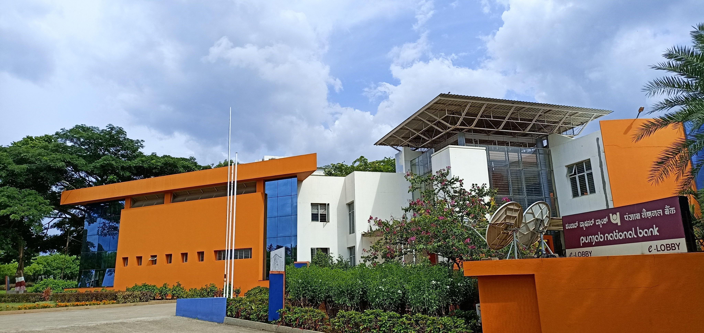
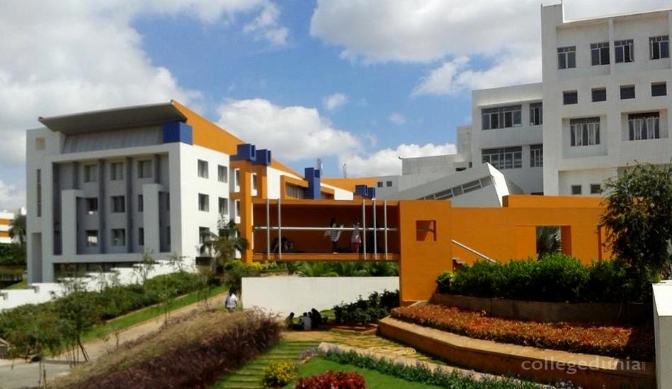
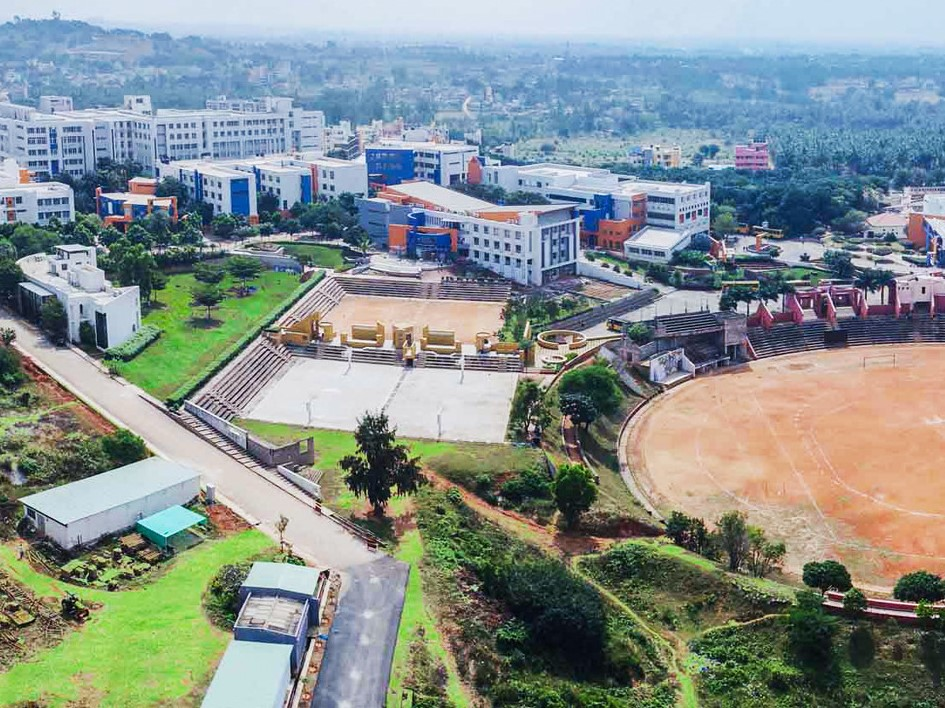
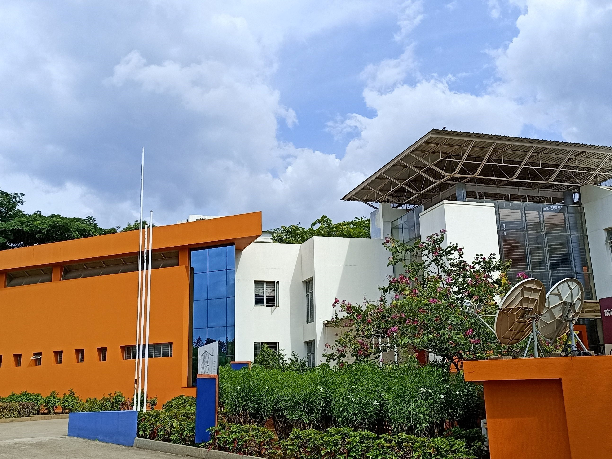

International Conference on Computing System and its Applications
Organized by
of
Department of Computer Science Engineering
Acharya Institute of Technology, Bengaluru
17th & 18th March, 2023


ABOUT ICCSA

International Conference on Computing System and its Applications (ICCSA -
2020) aims to bring together leading academic scientists, researchers and research
scholars to exchange and share their experiences and research results on all aspects of
Computer Science and Engineering. It also provides a premier interdisciplinary platform for
researchers, practitioners and educators to present and discuss the most recent innovations,
trends, and concerns as well as practical challenges encountered and solutions adopted in
the fields of Computer Science and Engineering. The aim of the conference is to provide a
platform to the researchers and practitioners from both academia as well as industry to meet
and share cutting-edge development in the field.
Conference Track:
Big data Analysis
Block chain technology and its application
Biomedical Engineering and its application
Computational intelligence and natural computing
Computer vision, image and signal processing
Distributed optimization and distributed learning
Fuzzy logic
Grid computing
Human computer, machine interaction
IoT communication and coordination middleware and platforms
Information Extraction
Linguistic Resources and Machine Translation
Machine learning and artificial intelligence
Modelling and control of Cyber-Physical Systems
Networked and distributed systems
Pattern recognition
Speech Recognition and Synthesis
Software engineering
Smart home and smart city
Semantic Processing and Information Retrieval
Scalability of complex networks
Security, privacy, reliability, and dependability
Text Mining
Transportation and logistics on autonomous vehicle
Wireless sensor networks
ABOUT ACHARYA INSTITUTE OF TECHNOLOGY, BENGALURU

Acharya Institute of Technology is affiliated to Visvesvaraya Technological University
(VTU), Belagavi, is approved by All India Council for Technical Education (AICTE), New
Delhi, Government of India and Accredited by National Board of Accreditation (NBA) and
National Assessment and Accreditation Council (NAAC). Acharya Institute of Technology is
committed to excellence in teaching, learning, research, and developing professionals in
many disciplines, who make a difference globally. It faculty are not only involved in
teaching but they also pursue rigorous research to push the boundaries of human knowledge.
For the students who are motivated to pursue their academic research and take up the biggest
challenges of the 21st century, Acharya Institute of Technology is the ultimate destination.
Located in the south Indian city 'Bangalore', known as “The Silicon Valley of India”.
Acharya Institute of Technology was established in the year 2000 and offers 13 undergraduate
programmes, 6 postgraduate programmes and 11 research programmes. The diverse academic
programmes attract nearly 5000 students from 60+ countries as well as from all parts of
India. Acharya prides itself of having a large notable alumnus from around the world.
ABOUT DEPARTMENT OF COMPUTER SCIENCE AND ENGINEERING
The
Department of Computer Science and Engineering was started in the year 2000 with an
intake of 60 students. Subsequently, in 2001, intake was enhanced to 120 students. now
in the current year 2020, intake is increased to 180. The department is accredited by
National Board of Accreditation (NBA). The Department offers a PG program M.Tech in
Computer Science &Engineering and has R&D centre recognized by VTU, Belagavi. The
department is having a team of highly qualified and experienced faculty. The computing
facility of the Department consists of a state-of-the-art network of computers. Diverse
research interests of faculty allow students to customize their experience and find
solutions to real-world problems. The department has established a centre of excellence
in Internet of Things (IOT) in collaboration with CDAC, Bangalore which offers
certification programs in IOT to students. The department of CS&E has a student forum
“LAKSHYA” through which the students will organize and participate in various Technical
events every year. The placement record of students has been good and it is around 90%
to 95%.
COMMITTEE
Chief Patrons
Shri. B. Premnath Reddy, Chairman, Acharya Institutes, Bengaluru, Karnataka, India
Patrons
Shri. B. Premnath Reddy, Chairman, Acharya Institutes, Bengaluru, Karnataka, India
Smt. Shalini Reddy, Executive Director, Acharya Institutes, Bengaluru, Karnataka,
India
Mr. Krishna Reddy Basani, Director, Acharya Institutes, Bengaluru, Karnataka, India
General Chair(s)
Dr. M.R. Prakash, Principal, Acharya Institute of Technology, Bengaluru, India
Dr. Hamid Reza Karimi, Politecnico di Milano, Italy
Dr. Parameshachari B.D., Nitte Meenakshi Institute of Technology, Bangalore, India
Program Chair(s)
Dr. Puttamadappa., Professor & Registrar, Dayananda Sagar University, Bangalore, India
Dr. Jaroslav Frnda, University of Zilina, Slovakia
Dr. Hemalatha K.L., Sri Krishna Institute of Technology, Bangalore, India
Dr. Nagaveni, Acharya Institute of Technology, Bangalore, India
Program Co-Chair(s)
Dr. Silvia Liberata Ullo, Assistant Professor, University of Sannio, Italy
Dr. Mohith P. Tahiliani, Assistant Professor, NITK Surathkal, India
Organizing Chair(s)
Dr. Manish Paul, Campus Director, Acharya Institutes, Bengaluru, India
Dr. Prashanth C.M., HOD, Department of Computer Science and Engineering, Acharya Institute
of Technology, Bengaluru, Karnataka, India
Technical Program Committee
Dr. Silvia Liberata Ullo, Assistant Professor, University of Sannio, Italy
Dr. Mohith P. Tahiliani, Assistant Professor, NITK Surathkal, India
Dr. Krishna Mohan C, Indian Institute of Technology, Hyderabad, India
Dr. G. R. Sinha, Professor, Myanmar Institute of Information Technology (MIIT), Mandalay,
Myanmar
Dr. Bibhash Sen, Assistant Professor, National Institute of Technology Durgapur, India
Dr. Malaya Kumar Nath, Assistant Professor, NIT Puducherry, Karaikal, India
Dr. Pradeep K Katti, Professor, Dr. Babasaheb Ambedkar Technological University, Lonere,
India
Dr. Tanima Dutta, Assistant Professor, Department of Computer Science and Engineering, IIT
(BHU), Varanasi, India
Dr. K M Sunjiv Soyjaudah, Professor, Faculty of Engineering, Reduit, University of
Mauritius, Mauritius
Dr. Arun Kumar Singh, College of Computing and Informatics, Saudi Electronic University,
Saudi Arabia
Dr. Álvaro Rocha, Professor, AISTI & University of Coimbra, Portugal
Dr. Chandratilak De Silva LIYANAGE, Dean & Professor, Universiti Brunei Darussalam,
Brunei
Dr. Aung Ko Ko Kyaw, Associate Professor, Southern University of Science and Technology,
China
Dr. Gordon Huang, Professor, University of Regina, Regina, Canada
Dr. Alvin Sahroni, Universitas Islam Indonesia, Yogyakarta, Indonesia
Dr. Rommel Evan J. Paje, Professor, Bicol University, Philippines
Dr. Mohammed A. Algarni, Professor (Assistant), Saudi Electronic University, Saudi
Arabia
Dr. Dimitris Kanellopoulos, Lecturer, University of Patras, Greece
Dr. R. Logeswaran, Lecturer, Asia Pacific University of Technology and Innovation (APU),
Malaysia
And Many More From Different country
Organizing Committee
Dr. V. Nagaveni, Professor, Acharya Institute of Technology, Bangalore, India
Dr. Ajith P., Associate Professor, Acharya Institute of Technology, Bangalore,
India
Dr. Pooja Gupta, Associate Professor, Acharya Institute of Technology, Bangalore,
India
Dr. Surekha K.B., Associate Professor, Acharya Institute of Technology, Bangalore,
India
Dr. Aruna M., Assistant Professor, Acharya Institute of Technology, Bangalore,
India
Dr. Sujatha B.M., Professor, Acharya Institute of Technology, Bangalore, India
Dr. Asha C.N., Associate Professor, Acharya Institute of Technology, Bangalore, India
Paper Submision
Prospective authors are encouraged to submit high quality original, previously unpublished,
experimental or theoretical research papers for presentation at the Conference. Articles
submitted to the conference should meet these criteria and must not be under consideration
for publication elsewhere. The paper should be in the format strictly as per the Paper
Template given below. The papers should be drafted in English with a maximum of Eight (8)
pages and minimum of 4 pages including figures, tables and references. The paper will be
peer reviewed by domain experts of the respective tracks by the Technical Program Committee.
Authors should submit the papers through Easy Chair. Kindly do not submit the paper multiple
times; it may lead to cancellation of your paper.
Plagiarism Policy:
Any act of plagiarism is a totally unacceptable academic misconduct and cannot be tolerated.
The conference team will be checking the plagiarism level of all the submitted papers for
ensuring the originality of content using iThenticate with an acceptable limit of 20%.